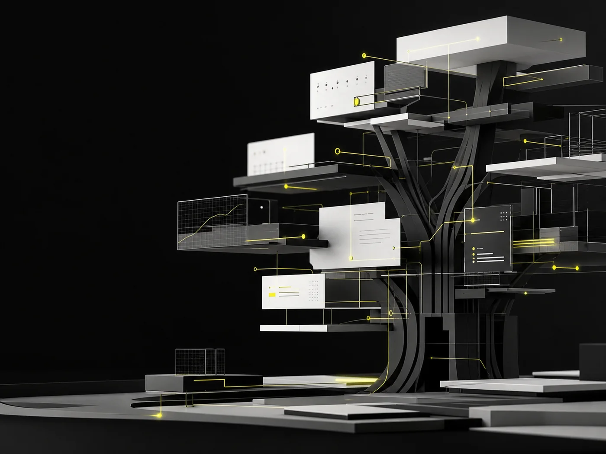

Make the business easier to engage.
Oakspire Tech needed a professional digital platform and automated workflows that could better support day-to-day operations and client interactions.
A professional platform designed to bring client experience and business operations into one clearer system.

Oakspire Tech needed a professional digital platform and automated workflows that could better support day-to-day operations and client interactions.
MASS built a custom business website and connected automation solutions and AI-powered workflows tailored to the company’s operational requirements.
The platform simplified business operations, enhanced the customer experience, and improved efficiency by moving repeatable work into dependable automated flows.
Oakspire Tech connects a polished public presence with the operational intelligence required behind it.
Design a smarter platform ↗